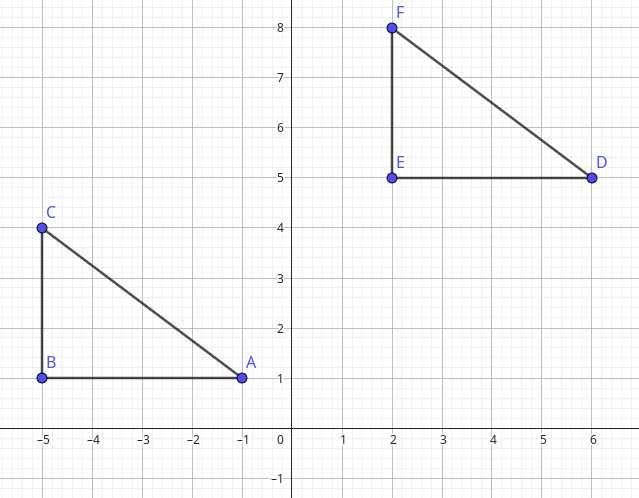
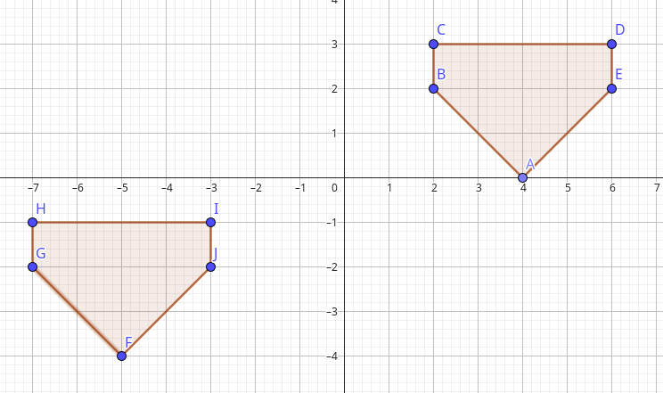

Na figura abaixo, o triângulo DEF é imagem do triângulo ABC. Qual foi a transformação geométrica utilizada no triângulo
ABC para se obter o triângulo DEF?

O que aconteceu com a coordenada x?
O que aconteceu com a coordenada y?
Qual a translação que relaciona as duas figuras?
Translade os pontos da figura acima 5 unidade para esquerda, e uma unidade para baixo?
Faça a translação (x + 6,y - 4)?
Segue a figura ABCDE e a figura FGHIJ

Qual as coordenadas da figura ABCDE?
Qual as coordenadas da figura FGHIJ?
Qual a translação que relaciona as duas figuras?
Qual o numero da chamada? Qual a sua idade? Coloque os dois digitos em dois pontos no plano cartesiano (x,y)?
Monte esta reta no gráfico?